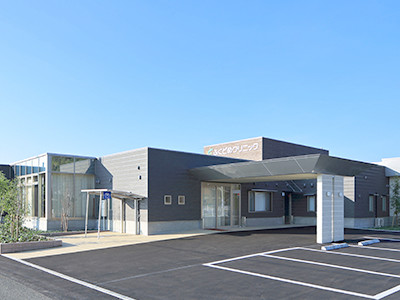
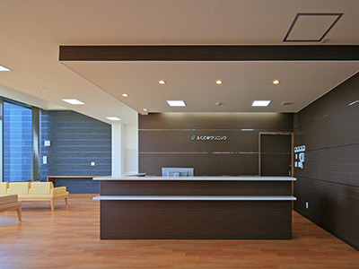
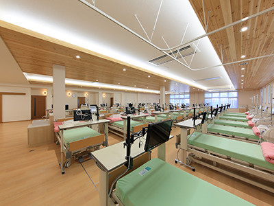
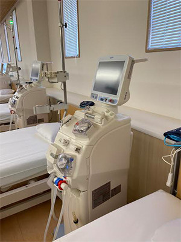
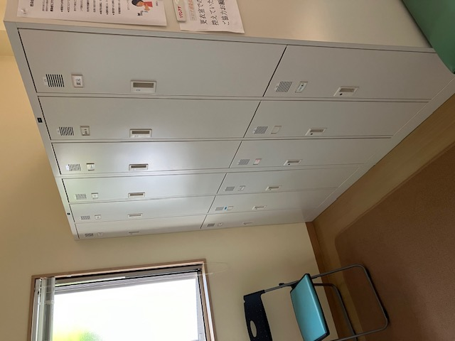
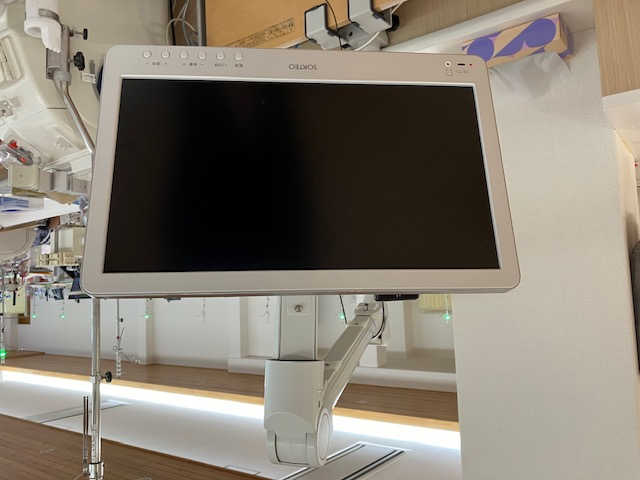
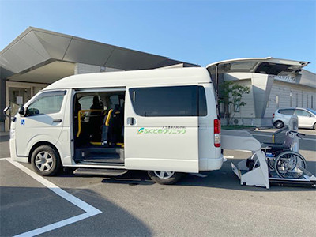

クリニックについて
ホーム > クリニックについて
クリニック概要



| 名称 | 医療法人 慶仁会 ふくどめクリニック |
|---|---|
| 開院 | 2015年12月1日 |
| 院長 | 福留 慶一 |
| 副院長 | 福留 理恵 |
| 診療科目 | 腎臓内科・人工透析内科 |
| 所在地 | 〒880-0924 宮崎県宮崎市大字郡司分甲1600番地1 |
| 電話 | 0985-41-7700 0985-41-7701（FAX） |
| 透析ベット数 | 39床 |
院長紹介

院長 福留 慶一
昭和42年5月7日生まれ 宮崎市出身
経歴
- 1986年
- 宮崎西高校卒
- 1992年
- 宮崎医科大学卒（現宮崎大学）
宮崎大学医学部付属病院
県立延岡病院
宮崎市古賀総合病院
宮崎市宮崎江南病院
日向市千代田病院等に勤務 - 2015年
- ふくどめクリニック開院
学位・専門医
- 医学博士
- 日本透析医学会 透析専門医
- 日本内科学会 総合内科専門医
所属学会
- 日本透析医学会
- 日本腎臓学会
- 日本内科学会
クリニックの特徴
 01
01
関連医療機関との連携
県内の基幹病院をはじめ、多くの医療施設との緊密な連携を行っています。
 02
02
透析ベット 39床
透析装置39台と、透析専用ベットをご用意しています。
 03
03
フットケア
透析患者さんは、腎臓病や合併している糖尿病などの影響により、動脈硬化で血液循環が悪くなり、足の病気や障害が起こりやすい状態です。
当院ではフットケアチームが月１回、フットケアを実施しています。
04
清浄化された透析液
透析液専用のフィルター設置や、臨床工学技士による定期的な検査により、高度に清浄化された透析液となっています。

05
オンラインHDF
透析低血圧となる「透析困難症」や、透析治療を長期間行っている患者さんに起きる「透析アミロイドーシス」への効果が期待されるオンラインHDFを行っています。

06
透析患者さん専用ロッカー
各透析患者さん専用のロッカーを準備しています。

07
各ベットにテレビ設置（無料）
透析治療時間が少しでも負担とならないように、各ベットに患者さん専用のテレビが設置されています。

08
送迎サービス（無料）
当院への通院が困難な際は、無料で送迎を行っています。